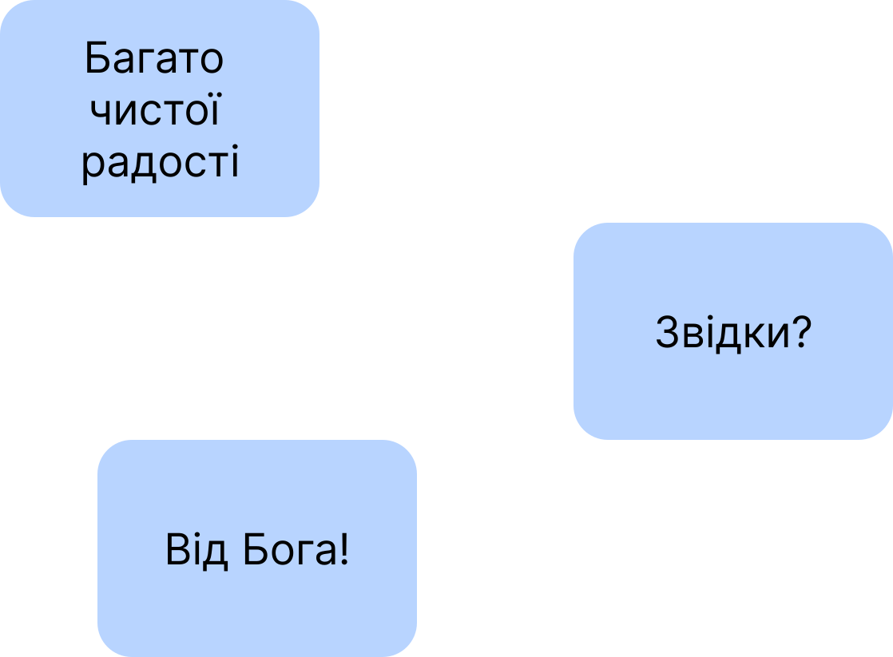

Слава Ісусу Христу!
☀️
Оскільки у праці, опублікованій за посиланням:
https://oleksandr-zhabenko.github.io/uk/commentaries/02082025.html
а ще раніше в інших, опублікованих за посиланнями:
https://churchandsociety.org.ua/pdf/projects/zbirnyk.pdf
https://oleksandr-zhabenko.github.io/uk/commentaries/17082024.html
https://oleksandr-zhabenko.github.io/uk/commentaries/12112025.html
https://oleksandr-zhabenko.github.io/uk/commentaries/27112024.html
написано, що вживання прийменників має важливе значення для правильного розуміння важливих і актуальних питань, зокрема питання влади, то пишу коментарі щодо вживання саме цих прийменників. Як порада щодо читання написаного — можна читати вірш у перекладі чи/та оригіналі (хто має таку змогу), а тоді відповідний коментар щодо прийменників тут. Далі потрібно зрозуміти, якої частини вірша стосується коментар, а також обдумати, що суттєве для розуміння він стверджує — чи рідше — заперечує. Таке вдумливе читання допомагає поглибити розуміння і береже від згаданих помилок.
Важливими творами, які проливають більше світла на цю тему також є наступні:
https://oleksandr-zhabenko.github.io/uk/commentaries/28052026.html
https://oleksandr-zhabenko.github.io/uk/commentaries/16082026.html
Підготував покращений варіант мого дослідження, презентація якого доступна за посиланням:
https://www.facebook.com/Oleksandr.S.Zhabenko/posts/2447150899034358
https://oleksandr-zhabenko.github.io/uk/commentaries/vystup-2025-hypo-genitive-Romans-XIII_1.pdf
Матеріал дослідження наразі готується до публікації. Маю надію, якщо дасть Бог, пізніше представити повніші результати після виходу публікації.
Сам список посилань щодо прийменників буду оновлювати за посиланнями:
https://oleksandr-zhabenko.github.io/uk/commentaries/02082025.html
https://oleksandr-zhabenko.github.io/uk/commentaries/Pryjmennyky.html
крайній — раз або двічі на місяць, щоб зберігати актуальною версію тексту і надалі.
Згадки Стронга (прим. за Стронгом) у перекладі оригінального тексту означають, що слово узято зі словника Стронга, а конкретне значення обране після перекладу та коментаря Google Gemini.
Літургія:
Филип’ян IV, 10 — 'ἐν κυρίῳ' — 'en kyrio' - у Господі; Господом
. Скоріше перший варіант перекладу, оскільки другий не зовсім зрозумілий за смислом.
Филип’ян IV, 11 — 'ἐν οἷς' — 'en hois' - у тому, що; тим, що
. Можливі обидва варіанти перекладу, причому перший підкреслює прийняття ситуації і працю для Господа та людей у різних обставинах, а другий — радість доброму у різних, навіть складних обставинах.
Филип’ян IV, 12 — 'ἐν παντὶ καὶ ἐν πᾶσιν' — 'en panti kai en pasin' - всюди та у всьому
.
Филип’ян IV, 13 — 'ἐν τῷ ἐνδυναμοῦντί' — 'en to endynamounti' - у Тому, Хто зміцнює
.
Филип’ян IV, 15 — 'ἐν ἀρχῇ' — 'en arkhe' - на початку
. Сталий вислів. 'ἀπὸ Μακεδονίας' - 'apo Makedinias' - з Македонії
. Прийменник 'apo' вказує тут на те, що Павло тоді повністю покинув Македонію. 'εἰς λόγον δόσεως καὶ λήμψεως' - 'eis logon doseos kai lempseos' - у справі давання і приймання; щодо справи давання і приймання
.
Филип’ян IV, 16 — 'ἐν Θεσσαλονίκῃ' — 'en Thessalonike' - у Солуні
. Де. 'εἰς τὴν χρείαν' - 'eis ten khreian μοι' - для потреб моїх
. Тут прийменник 'eis' вказує на мету дії.
Филипʼян IV, 17 — 'εἰς λόγον ὑμῶν' — 'eis logon hymon' - для вашої справи
. Прийменник 'eis' вказує тут на мету.
Филип’ян IV, 18 — 'παρὰ Ἐπαφροδίτου' — 'para Epaphroditou' - від поряд Епафродита
. 'παρ’ ὑμῶν' - 'par hymon' - від поряд вас
. Прийменник 'para' тут з родовим відмінком в обох випадках. Така конструкція вживається щодо ісходження Святого Духа від Отця, щодо Пресвятої Трійці, щодо всього Божого задуму, також щодо людської природи Ісуса Христа. Дивіться за посиланнями:
https://oleksandr-zhabenko.github.io/uk/commentaries/02082025.html
https://oleksandr-zhabenko.github.io/uk/commentaries/Pryjmennyky.html
https://oleksandr-zhabenko.github.io/uk/commentaries/28052026.html
https://oleksandr-zhabenko.github.io/uk/commentaries/16082026.html
Тут вказує на цінність дарів і те, що вони були від Святого Духа, даровані та передані за Його спонукою та волею, також згідно Божого задуму.
Филип’ян IV, 19 — 'ἐν δόξῃ ἐν Χριστῷ Ἰησοῦ' — 'en doxe en CHristo Iesou' - у славі у Христі Ісусі
.
Филип’ян IV, 20 — 'εἰς τοὺς αἰῶνας τῶν αἰώνων· ἀμήν' — 'eis tous aionas ton aionon amen' - у віки віків. Амінь; навіки віків. Амінь
. Сталий вислів.
Филип’ян IV, 21 — 'ἐν Χριστῷ Ἰησοῦ' — 'en CHristo Iesou' - у Христі Ісусі
. У Кому.
Филип’ян IV, 22 — 'ἐκ τῆς Καίσαρος οἰκίας' — 'ek tes Kaisaros oikias' - з дому кесаря
. Прийменник 'ek' вказує тут на те, звідки ті люди.
Апостол Павло поширено (у кількох реченнях) пише про те, що филип’яни стали єдиною Церквою в Македонії, яка відправила йому дари для підтримки місії, що він їм вдячний і просить Божого благословення їм. При цьому Павло пише, що радіє не отриманим дарам, але тому, що ця пожертва филип’ян є славою їхньою у Христі. Сам Павло каже, що може жити і продовжувати місію без цієї цінної допомоги, бо звик як апостол у Христі жити в різних умовах — сприятливих чи несприятливих, дякуючи Богові за те, що Він подає через працю Павла та допомогу людей, але радіє саме тій Єангельській співучасті у справі Христовій для спасіння людей та пізнання істини.
Відмічу, що Павло не боїться хвалити филип’ян за їх особливу доброчинність на славу Божу, але і не ставить це в особливу заслугу. Добрим є прославляти Бога, але може бути небезпечним бачити цю прославу як заслугу через спокусу гордості.
Також тут бачимо урок бути задоволеним тим, що Бог дає. Часто думають, що бути задоволеним тим, що є, означає не прагнути більшого, не прагнути зростання та розвитку. Це неправильне розуміння. Задоволеність означає відсутність внутрішнього (чи також і зовнішнього) протесту, що цього мало!
, мені цього недостатньо!
тощо, але вона відкрита до отримання більшого та руху вперед і вгору. Добре, що є, І будемо рухатися далі!
. Без задоволеності у такому сенсі неможливе щастя, вона сама є певною мірою щастям. Також потрібно пам’ятати, що Бог є у цьому сенсі Всезадоволеним, Пресвята Трійця не має потреби у чомусь поза Нею Самою.
Слова з вірша 13 (з додатком, який є не в усіх рукописах, але який очевидний) є дуже відомими.
Завершують лист вітання та благословення, побажання благодаті у Господі.
Більше про читання з Апостола дивіться за посиланнями:
https://oleksandr-zhabenko.github.io/uk/commentaries/27102025.html
https://oleksandr-zhabenko.github.io/uk/commentaries/11112024.html
https://oleksandr-zhabenko.github.io/uk/commentaries/23102023.html
Сама притча та її пояснення Ісусом показують, що Господь виявив милість і Симону, і тій розкаяній грішниці, але Симон жив благочестиво, тому не відчував глибокої потреби в покаянні, в прощенні гріхів. У притчі він в образі боржника 50 динаріїв. А грішниця — в образі боржника 500 динаріїв. Водночас, хоча Симон вів себе добре, але до нього були у Христа зауваження. Христос відмітив не такі близькі стосунки, невеликі, але все ж промахи, гріхи (які стають тим більш значимими, коли йдеться про глибокі особисті стосунки). Люди часто не схильні помічати невеликі гріхи
, тоді як насправді потребують глибокої любові та вдячності.
Більше про читання з Євангелія дивіться за посиланнями:
https://oleksandr-zhabenko.github.io/uk/commentaries/29032026.html
https://oleksandr-zhabenko.github.io/uk/commentaries/27102025.html
https://oleksandr-zhabenko.github.io/uk/commentaries/11072025.html
https://oleksandr-zhabenko.github.io/uk/commentaries/09102023.html
https://oleksandr-zhabenko.github.io/uk/commentaries/20062023.html
Слава Тобі, Боже наш, слава Тобі!